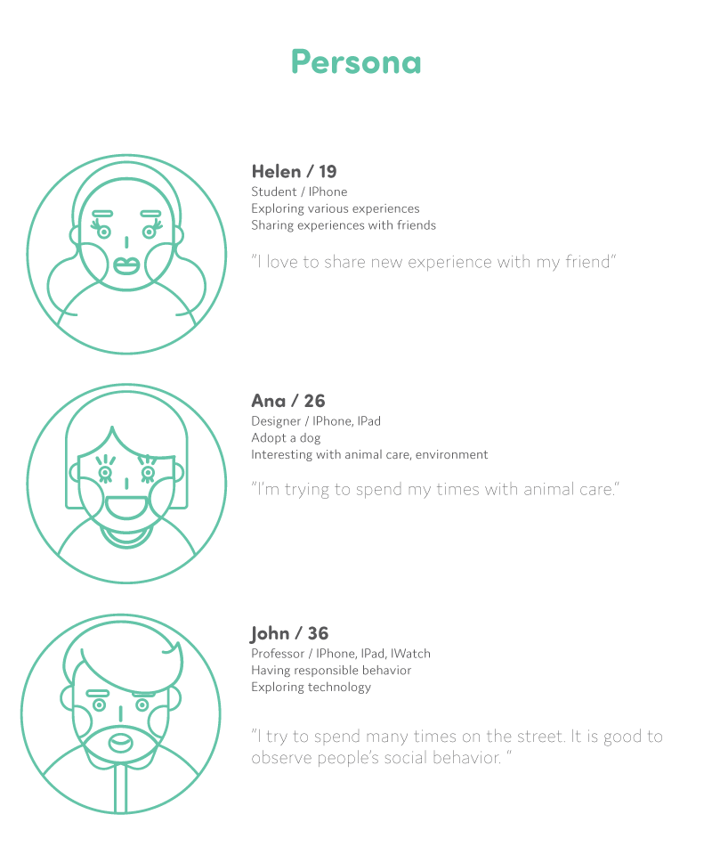
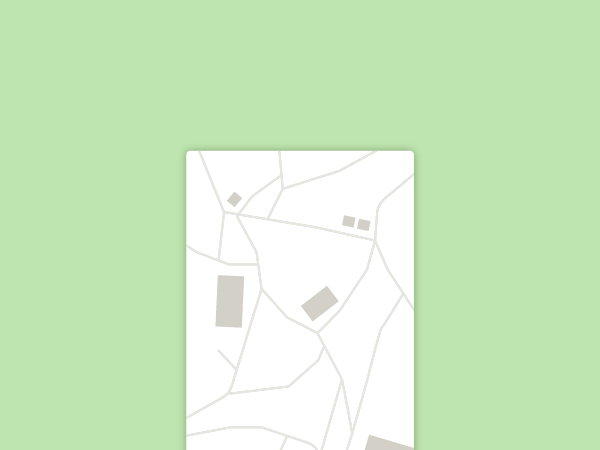
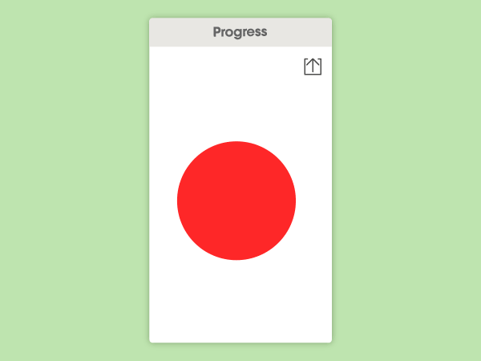
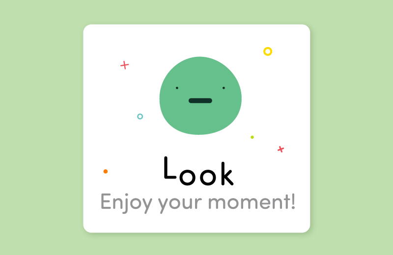

Minder
Motion Design / Branding / Service Design
This service makes a new platform like Amber Alert that enhances signage system that uses IOS technology which is mobile allows interaction. This new service proposed solutions for people who care about their community, responsibility, and also people who need help to change their patterned misbehaviors. This is a reminder system/device which can track people’s usage progress, reward(giving 'like' or emoji-entertainment), and make people share about their experiences. How this system works is after people input their general information, they can take the survey about their location, interests, social media, electronic devices, behavior-patterns to customize service. Then, they can start to get some notifications based on both input and the location to remind certain actions of behavior. For example, creating interactive signage with simple interactions(drag, slide, tap), which provide reminders and entertainment.

Show and share your love.
 
